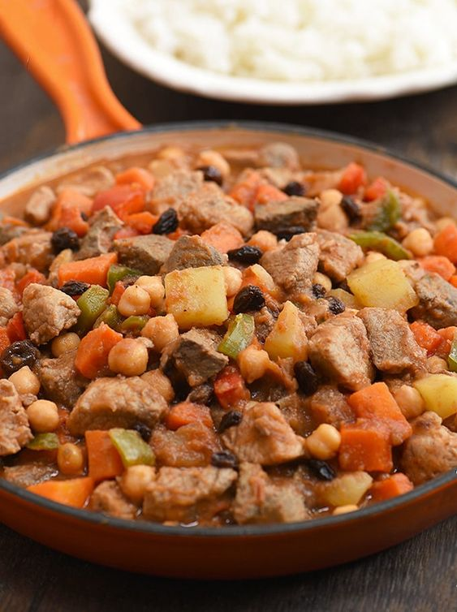

Filipino pork menudo traditionally consists of chunks of pork that is stewed in a tomato sauce. Liver and potatoes are added afterwards while vegetables like bell peppers, green peas, carrots, raisins and chickpeas may also be added. Some versions of menudo could even have chorizo, ham or hotdog for a richer flavor.
Ingredients (serving: good for 6 people)
- 3 tbsp Vegetables Oil
- 1 pc Potato
- 1 pc Carrot
- 0.5 kg Pork Shoulder
- 6 Gloves garlic
- 1 pc Onion
- 1 pc Red Bell Pepper
- 1 pc Green Bell Pepper
- 3 pcs Bay leaf
- 1 cup Tomato Sauce
- 2.5 cups Water
- 1 tbsp Brown Sugar
Steps for making Pork Menudo
- Sauté potato and carrot in 1 tbsp oil until golden brown. Remove and set aside.
- Sauté pork in the same pan. Remove and set aside.
- Sauté garlic, onion and bell peppers. Pour tomato sauce and water. Add pork, bay leaf, pepper and sugar. Simmer for 45 minutes.
- Add potato and carrot.and simmer for another 10 minutes. Transfer into a serving plate and serve.
Return to home Page
Return to top